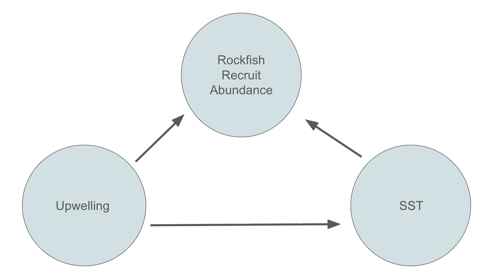

Rockfish (genus Sebastes) are an important commercial and recreational fishing target on the west coast. The early life stages of Rockfish are spent in the water column until they grow strong enough to swim to structure. With global ocean temperatures increasing, I aim to analyze how increases in water temperature during Pelagic Larval Duration (PLD) affects the abundance of new rockfish, or Young of Year (YOY). I will utilize timeseries data of YOY abundance collected at the Northern Channel Islands. During data collection, California experienced a marine heatwave often referred to as “The Blob” during 2014-2016. I will analyze the effects of temperature on YOY abundance from 2012 to 2019 in order to determine if the warmer waters during the Blob influenced abundance and give insight to how the population may change has global ocean temperatures increase due to climate change. Additionally, I will incorporate the impacts of upwelling, which supplies nutrients to YOY during the PLD.
About the data
The data quantifying Rockfish recruitment comes from the Partnership of Interdiscpilnary Sciences of Coastal Oceans (PISCO) long-term fish recruitment monitoring in the Channel Islands. The YOYs were collected using Standardized Monitoring Units for the Recruitment of Fishes (SMURFs) that were placed just off the coast of the Northern Channel Islands in an attempt to collect recruit fish as they swam to structure. Monitoring took place from 2000-2018, with collections occuring year round starting in 2012.
NOAA data is used to quantify temperature with Sea Surface Temperature (SST) lag 30 days from time of collection to predict SST during PLD. Upwelling was quanitified using the Biological Effective Upwelling Transport Index (BEUTI) lag 30 days.
Hypotheses
H0: Temperature has no effect on rockfish recruitment
Ha: Increased temperature has a positive effect on rockfish recruitment
Directed Acyclic Graph (DAG)
 Upwelling is the result of moving water, often bringing cold, nutrient rich water from the deep up to the surface. This impacts the SST, decreasing temperature during mass upwelling. Additionally, the nutrients supplied in upwelling have a direct impact on YOY development, providing necessary nutrients during the PLD. The temprature also impacts fish development in the PLD, with faster development occuring at warmer temperatures.
Load necessary packages and data
Code
library(tidyverse)library(knitr)library(pscl)library(modelsummary)library(MASS)smurf <-read_csv("data/PISCO_UCSB_subtidal_recruitment_fish_data.1.2.csv")smurf_sp <-read_csv("data/PISCO_UCSB_subtidal_recruitment_fish_spp_list.1.2.csv")# Data for ocean temperature and upwellingocean <-read_csv("data/ALL_OCEAN_DATA.csv")
Data Cleaning
Before I can start working on my statistical modelings, I need to do some cleaning and filtering to get the data ready to be analyzed. I first subset my data to include only my species of interest. I chose Copper, Kelp, Gopher, Grass, and Brown rockfish, because they have similar PLDs and are difficult to differentiate at a small size. I chose to look at data between 2012-2019 to include before, during, and after the Blob. I also narrowed the window of sampling by year to only include sampling during the months of recruitment to avoid a seasonal pattern from emerging. I chose to only look at the two most consistently sampled sites, which were located at Santa Cruz island.
In order to analyze this data, I selected a hurdle model because the data contains many 0’s. Hurdle models are a type of hierarchical model that first tests presence and absence (0 and 1) with a predictor variable, then tests abundance. For these steps \[FishPresence \sim Binomial(1, p) \\
logit(p) = \beta_0 + \beta_1 SST + \beta_2 BEUTI\]
For simplicity in understanding the model, I only selected temperature as predictor variable to simulate data and get my beta values returned to me. To begin simulating data, I need to generate x values based on the SST lag 30 days variable from the original data. From there I can use those temperatures and beta values I selected to run the binomial equation to find logit(p). I think take the inverse logit of those values to generate p which represents the probability of success. Using that probability, I simulated a success variable with rbinom() to generate 0’s and 1’s.
Similar to the binomial step, I chose new beta values for the equation and used the same generated temperature data. The output of the negative binomial equation gives log of mu, or the mean. By applying an exponential to that, the mean of the data is found, which is then used to simulate count data using rnbinom().
I successfully simulated data, applied the hurdle model, and got my beta values back!
Hurdle model Application
After completing a simulation of data and running a hurdle model, I can apply it to my data. I will add my upwelling variable back in to test my hypothesis
After completing a simulation of data and running a hurdle model, I can apply it to my data. I will add my upwelling variable back in to test my hypothesis